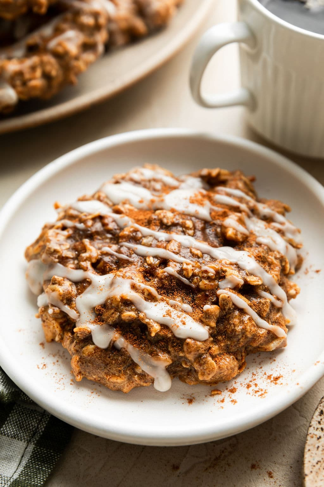

Home
Chai Spice Protein Breakfast Cookies

Enjoy those warming and delicious spices of a favorite hot chai tea, now in breakfast cookie form. These make-ahead cookies are high in protein, boasting 15 grams of high-quality protein in every cookie. Add nutrition and new flavors to your healthy morning routine.
Ingredients
For the Protein Cookies:
- 1 3/4 cups Old fashion rolled oats
- 1/2 cup Puori vanilla protein powder
- 1 cup Creamy almond butter or peanut butter
- 1/4 cup Pure maple syrup
- 2 large Eggs
- 1 medium Ripe Banana, mashed
- 1/3 cup Plain 2% or whole milk Greek yogurt
- 1 1/2 tsp Ground ginger
- 1 tsp Ground cinnamon
- 1/2 tsp Fine salt
- 1/2 tsp Ground allspice
- 1/4 tsp Ground nutmeg
- 1/8 tsp Ground cardamom
- 1/2 cup Flaked or shredded coconut
- 1/2 cup Chopped raw or roasted cashews
- 2 tbs Ground flaxseed (optional)
For the Icing Drizzle (Optional):
- 1/4 cup Powdered sugar
- 1 tsp Water or milk of choice
- 1/2 tsp Vanilla extract
- Dash Ground cinnamon or nutmeg
Steps
- Preheat the oven to 375°. Line two large rimmed baking sheets with parchment paper.
- In a large bowl, combine the oats, protein powder, almond butter, maple syrup, eggs, mashed banana, yogurt, and all of the spices (ginger through cloves). Mix until well combined.
- Add the shredded coconut and cashews. Add the flaxseed (if using). Mix to incorporate. Batter will be wet and heavy.
- Scoop the dough into 10 mounds, using about ¼ cup dough for each. Place 5 mounds on each of the prepared baking sheets.
- Gently shape and press each cookie into a round disc that is about 2- to 2 ½-inches wide and ½-inch thick.
- Bake one sheet at a time on the middle rack for 10 minutes. The cookies may look wet but should be firm to the touch.
- Remove from the oven and let the cookies cool on the baking sheet for 5 minutes before transferring to wire racks to cool completely.
- If desired, drizzle with icing. In a small bowl or glass measuring cup, whisk together the powdered sugar, milk, and vanilla. Drizzle lightly over the cooled cookies. Garnish with a light dash of nutmeg or cinnamon.